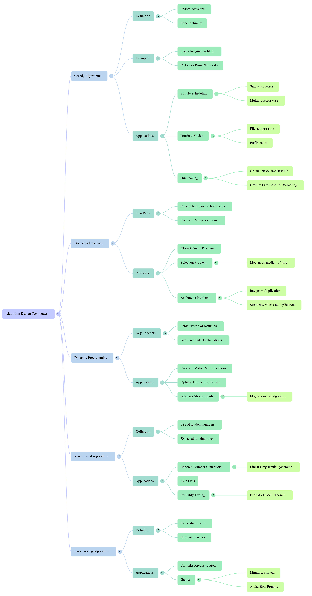

Xinxing Wu
# Algorihtm Design Techniques <hr> <br> Xinxing Wu
# Outline [<p class="hover-underline-animation">Greedy Algorithms</p>](#/ch1) [<p class="hover-underline-animation">Divide & Conquer</p>](#/ch2) [<p class="hover-underline-animation">Dynamic Programming</p>](#/ch3)
# Outline (cont.) [<p class="hover-underline-animation">Randomized + Backtracking</p>](#/ch4) [<p class="hover-underline-animation">Summary</p>](#/ch5) [<p class="hover-underline-animation">Exercise</p>](#/ch6)
## Goal <div id="shadebox-neon" class="shadebox neon"> By the end, you can: - Recognize **5 major design techniques** - Choose a reasonable technique for a new problem - <spanRED>*</spanRED> Write **small C++ implementations** of core ideas - Explain **time complexity** at a high level </div>
<p class="definition-rainbow-title">Greedy Algorithms</p>
<div class="definition-pro-Y-container"> <div class="definition-pro-Y-title">A pattern</div> <div class="definition-pro-Y-shadebox"> <div style="width: 800px;"></div> - “Algorithm design technique” = a pattern - A technique is a reusable *thinking template*: <div id="shadebox-glass" class="shadebox glass"> - Greedy: pick best-now choice - Divide & Conquer: split → solve → combine - Dynamic Programming: store answers to subproblems - Randomized: use randomness to simplify/accelerate - Backtracking: search + prune </div> </div> </div> <div class="definition-pro-Y-container"> <div class="definition-pro-Y-title">Warm-up question</div> <div class="definition-pro-Y-shadebox"> <div style="width: 800px;"></div> If brute force is too slow, what can we do? - Use structure in the problem - Avoid repeating work - Reduce search space - Make “good enough” choices quickly </div> </div> <div class="definition-pro-Y-container"> <div class="definition-pro-Y-title">Greedy idea</div> <div class="definition-pro-Y-shadebox"> <div style="width: 800px;"></div> <div id="shadebox-glass" class="shadebox glass"> At each step, take the **best local choice**, hoping it leads to a **global best**. </div> </div> </div> <div class="definition-pro-Y-container"> <div class="definition-pro-Y-title">Greedy works when…</div> <div class="definition-pro-Y-shadebox"> <div style="width: 800px;"></div> Typical proof style: **exchange argument** <div id="shadebox-glass" class="shadebox glass"> - “If an optimal solution doesn’t use this choice, we can swap something and not get worse.” </div> </div> </div> <div class="definition-shakeflash-container"> <div class="definition-shakeflash-title">Greedy does NOT always work</div> <div class="definition-shakeflash-shadebox"> <div style="width: 800px;"></div> <div id="shadebox"> Greedy can fail if: - Local best blocks a better future arrangement - “Best now” ≠ “best overall” </div> </div> </div> <div class="definition-pro-Y-container"> <div class="definition-pro-Y-title">Example 1</div> <div class="definition-pro-Y-shadebox"> <div style="width: 800px;"></div> - Example 1: Scheduling to minimize *average completion time* We have jobs with processing times: - Job i has time `t[i]` - If order is J1, J2, ... then completion times add up **Shortest Job First (SJF)** is optimal for minimizing average completion time. </div> </div> <div class="definition-pro-Y-container"> <div class="definition-pro-Y-title">What is “completion time”?</div> <div class="definition-pro-Y-shadebox"> <div style="width: 800px;"></div> If order is: A(3), B(5), C(2) Completion times: - A finishes at 3 - B finishes at 3+5=8 - C finishes at 3+5+2=10 <div id="shadebox-glass" class="shadebox glass"> Average completion time: - (3 + 8 + 10) / 3 = 7 </div> </div> </div> <div class="definition-pro-Y-container"> <div class="definition-pro-Y-title">Greedy rule for this scheduling</div> <div class="definition-pro-Y-shadebox"> <div style="width: 800px;"></div> Sort jobs by increasing time: - smallest `t[i]` first (SJF) Why it works (intuition): - Short jobs finishing early helps many jobs behind them </div> </div> <div class="definition-pro-Y-container"> <div class="definition-pro-Y-title">Practice</div> <div class="definition-pro-Y-shadebox"> <div style="width: 800px;"></div> Jobs (name, time): - A 8, B 3, C 6, D 1 1) Write the SJF order 2) Compute completion times 3) Compute average completion time <button type="button" class="reveal-btn" data-answer="answer-q1">Show Answer</button> <div id="answer-q1" class="answer-box"> <b>Answer:</b> Sorted by time: D(1), B(3), C(6), A(8); Completion times: 1, 4, 10, 18; Average = (1+4+10+18)/4 = 33/4 = 8.25 </div> </div> </div> <div id="shadebox"> ### SJF scheduling <hr style="border: none; border-top: 1.5px solid cyan;"> ``` #include <iostream> #include <vector> #include <algorithm> using namespace std; struct Job { string name; int time; }; int main() { vector<Job> jobs = {{"A",8},{"B",3},{"C",6},{"D",1}}; sort(jobs.begin(), jobs.end(), [](const Job &a, const Job &b){ return a.time < b.time; }); long long sumCompletion = 0; long long current = 0; cout << "Order: "; for (int i = 0; i < (int)jobs.size(); i++) { cout << jobs[i].name << (i+1==(int)jobs.size() ? "\n" : " -> "); current += jobs[i].time; sumCompletion += current; } double avg = (double)sumCompletion / jobs.size(); cout << "Average completion time = " << avg << "\n"; return 0; } //Note: Replace lambda with a separate compare function ``` </div> <div class="definition-pro-Y-container"> <div class="definition-pro-Y-title">Greedy scheduling</div> <div class="definition-pro-Y-shadebox"> <div style="width: 800px;"></div> Greedy scheduling: multi-processor intuition <div id="shadebox-glass" class="shadebox glass"> - Still greedy-ish ideas exist, - But optimal becomes trickier (more constraints). </div> - Greedy is easy to try, but optimality may change with problem version. </div> </div> <div class="definition-pro-Y-container"> <div class="definition-pro-Y-title">Huffman coding</div> <div class="definition-pro-Y-shadebox"> <div style="width: 800px;"></div> Transition: another classic greedy — Huffman coding <div id="shadebox-glass" class="shadebox glass"> Goal: compress data by giving frequent characters shorter codes. </div> </div> </div> <div class="definition-pro-Y-container"> <div class="definition-pro-Y-title">Huffman codes</div> <div class="definition-pro-Y-shadebox"> <div style="width: 800px;"></div> We want a **prefix code**: - No code is the prefix of another (so decoding is unambiguous) Example: - If `a = 0`, then `b` cannot start with `0` like `01` (would conflict) </div> </div> <div class="definition-pro-Y-container"> <div class="definition-pro-Y-title">Why Huffman is greedy</div> <div class="definition-pro-Y-shadebox"> <div style="width: 800px;"></div> Each step: - Combine the **two least frequent** items into a new “merged node” - Repeat until one tree remains This repeated “pick two smallest” is the greedy choice. </div> </div> <div class="definition-pro-Y-container"> <div class="definition-pro-Y-title">Huffman algorithm</div> <div class="definition-pro-Y-shadebox"> <div style="width: 800px;"></div> Huffman algorithm (high-level) - 1)Put all characters in a min-priority-queue by frequency - 2)While more than 1 node: - pop two smallest - merge into new node (freq = sum) - push back - 3)Traverse tree: left = 0, right = 1 → codes </div> </div> <div id="shadebox"> ### Example code <hr style="border: none; border-top: 1.5px solid cyan;"> ``` Frequencies: - a:5, b:9, c:12, d:13 Steps: - combine (a5,b9) → 14 - combine (c12,d13) → 25 - combine (14,25) → 39 Then assign 0/1 edges → codes. ``` </div> <div id="shadebox"> ### Huffman building blocks <hr style="border: none; border-top: 1.5px solid cyan;"> ``` #include <iostream> #include <queue> #include <vector> #include <string> using namespace std; struct Node { char ch; // character, or '\0' for internal nodes int freq; Node* left; Node* right; Node(char c, int f) : ch(c), freq(f), left(NULL), right(NULL) {} Node(Node* a, Node* b) : ch('\0'), freq(a->freq + b->freq), left(a), right(b) {} }; struct Cmp { bool operator()(Node* a, Node* b) const { return a->freq > b->freq; // min-heap behavior } }; void printCodes(Node* root, string path) { if (root == NULL) return; // leaf if (root->left == NULL && root->right == NULL) { cout << root->ch << " : " << path << "\n"; return; } printCodes(root->left, path + "0"); printCodes(root->right, path + "1"); } int main() { priority_queue<Node*, vector<Node*>, Cmp> pq; pq.push(new Node('a', 5)); pq.push(new Node('b', 9)); pq.push(new Node('c', 12)); pq.push(new Node('d', 13)); while ((int)pq.size() > 1) { Node* x = pq.top(); pq.pop(); Node* y = pq.top(); pq.pop(); pq.push(new Node(x, y)); } Node* root = pq.top(); cout << "Huffman codes:\n"; printCodes(root, ""); return 0; } // Note: For class projects, add memory cleanup (delete nodes). For beginners, focus on concept. ``` </div> <div class="definition-pro-Y-container"> <div class="definition-pro-Y-title">Stop & check (Huffman)</div> <div class="definition-pro-Y-shadebox"> <div style="width: 800px;"></div> - Why do we always merge the two smallest frequencies? - What makes the code “prefix”? - Why can we decode uniquely? </div> </div> <div class="definition-pro-Y-container"> <div class="definition-pro-Y-title">Online algorithms</div> <div class="definition-pro-Y-shadebox"> <div style="width: 800px;"></div> **Online** = input arrives over time, must decide immediately. You can’t “look ahead”. </div> </div> <div class="definition-pro-Y-container"> <div class="definition-pro-Y-title">Bin packing problem</div> <div class="definition-pro-Y-shadebox"> <div style="width: 800px;"></div> - Each bin capacity = 1.0 - Items are sizes like 0.2, 0.5, 0.7 … - Goal: use as few bins as possible </div> </div> <div class="definition-pro-Y-container"> <div class="definition-pro-Y-title">Next Fit - online greedy</div> <div class="definition-pro-Y-shadebox"> <div style="width: 800px;"></div> Rule: - Keep only **one active bin** - If item fits in active bin → put it - Else close it and open a new bin Fast, but can waste space. </div> </div> <div class="definition-pro-Y-container"> <div class="definition-pro-Y-title">First Fit - online greedy</div> <div class="definition-pro-Y-shadebox"> <div style="width: 800px;"></div> Rule: - Put item into the **first bin** (from left to right) where it fits - If none fits → open new bin Usually better than next fit. </div> </div> <div class="definition-pro-Y-container"> <div class="definition-pro-Y-title">Best Fit - online greedy</div> <div class="definition-pro-Y-shadebox"> <div style="width: 800px;"></div> Rule: - Put item where it leaves the **least remaining space** (tightest fit) - If none fits → new bin Often good in practice. </div> </div> <div class="definition-pro-Y-container"> <div class="definition-pro-Y-title">Mini trace</div> <div class="definition-pro-Y-shadebox"> <div style="width: 800px;"></div> Items in order: 0.2, 0.5, 0.4, 0.7, 0.1, 0.3, 0.8 Try: - Next Fit - First Fit Compare #bins used. </div> </div> <div id="shadebox"> ### Simple C++: Next Fit <hr style="border: none; border-top: 1.5px solid cyan;"> ``` #include <iostream> #include <vector> using namespace std; int nextFitBins(const vector<double> &items) { int bins = 1; double remaining = 1.0; for (int i = 0; i < (int)items.size(); i++) { if (items[i] <= remaining) { remaining -= items[i]; } else { bins++; remaining = 1.0 - items[i]; } } return bins; } int main() { vector<double> items = {0.2,0.5,0.4,0.7,0.1,0.3,0.8}; cout << "Next Fit bins = " << nextFitBins(items) << "\n"; return 0; } ``` </div> <div id="shadebox"> ### Simple C++: First Fit <hr style="border: none; border-top: 1.5px solid cyan;"> ``` #include <iostream> #include <vector> using namespace std; int firstFitBins(const vector<double> &items) { vector<double> rem; // remaining space in each bin for (int i = 0; i < (int)items.size(); i++) { double x = items[i]; bool placed = false; for (int b = 0; b < (int)rem.size(); b++) { if (x <= rem[b]) { rem[b] -= x; placed = true; break; } } if (!placed) { rem.push_back(1.0 - x); } } return (int)rem.size(); } int main() { vector<double> items = {0.2,0.5,0.4,0.7,0.1,0.3,0.8}; cout << "First Fit bins = " << firstFitBins(items) << "\n"; return 0; } ``` </div> <div class="definition-pro-Y-container"> <div class="definition-pro-Y-title">First Fit Decreasing (offline improvement)</div> <div class="definition-pro-Y-shadebox"> <div style="width: 800px;"></div> If you are allowed to see all items first: - Sort items decreasing - Run First Fit Often much better. </div> </div> <div id="shadebox"> ### First Fit Decreasing <hr style="border: none; border-top: 1.5px solid cyan;"> ``` #include <iostream> #include <vector> #include <algorithm> using namespace std; int firstFitDecreasingBins(vector<double> items) { sort(items.begin(), items.end(), greater<double>()); vector<double> rem; for (int i = 0; i < (int)items.size(); i++) { double x = items[i]; bool placed = false; for (int b = 0; b < (int)rem.size(); b++) { if (x <= rem[b]) { rem[b] -= x; placed = true; break; } } if (!placed) rem.push_back(1.0 - x); } return (int)rem.size(); } int main() { vector<double> items = {0.2,0.5,0.4,0.7,0.1,0.3,0.8}; cout << "FFD bins = " << firstFitDecreasingBins(items) << "\n"; return 0; } ``` </div> <div class="definition-pro-Y-container"> <div class="definition-pro-Y-title">Greedy summary</div> <div class="definition-pro-Y-shadebox"> <div style="width: 800px;"></div> You learned 3 greedy flavors from the PDF: - Sorting-based greedy (SJF scheduling) - Priority-queue greedy (Huffman) - Heuristic greedy (bin packing) </div> </div>
<p class="definition-rainbow-title">Divide & Conquer</p>
<div class="definition-pro-Y-container"> <div class="definition-pro-Y-title">Divide & Conquer</div> <div class="definition-pro-Y-shadebox"> <div style="width: 800px;"></div> Divide & Conquer (the pattern) - **Divide** into smaller subproblems - **Conquer** recursively - **Combine** solutions </div> </div> - Classic: merge sort, quicksort, binary search <div class="question-container"> <div class="question-title">Why D&C helps</div> <div class="question-shadebox"> <div style="width: 800px;"></div> - Smaller problems are easier - Recursion gives structure - Often leads to **$\mathcal{O}(N \log N)$** solutions </div> </div> <div class="question-container"> <div class="question-title">Running time = a recurrence</div> <div class="question-shadebox"> <div style="width: 800px;"></div> We describe time by equations like: - Merge sort: `T(N) = 2T(N/2) + O(N)` This is exactly what the PDF’s D&C section analyzes. </div> </div> <div class="question-container"> <div class="question-title">Master theorem</div> <div class="question-shadebox"> <div style="width: 800px;"></div> For: `T(N) = aT(N/b) + O(N^k)` Compare: - “work in recursion” vs “work in combine” </div> </div> <div class="question-container"> <div class="question-title">Master theorem: the 3 cases</div> <div class="question-shadebox"> <div style="width: 800px;"></div> Let $N^(\log_b^a)$ be “recursion work level”. - If `a < $b^k$` → `T(N) = $\mathcal{O}(N^k)$` - If `a = $b^k$` → `T(N) = $\mathcal{O}(N^k \log N)$` - If `a > $b^k$` → `T(N) = $\mathcal{O}(N^{(\log_b^a))}$` </div> </div> <div class="question-container"> <div class="question-title">Practice</div> <div class="question-shadebox"> <div style="width: 800px;"></div> - `T(N) = 2T(N/2) + $\mathcal{O}(N)$` - `T(N) = 4T(N/2) + $\mathcal{O}(N)$` - `T(N) = 3T(N/2) + $\mathcal{O}(N)$` </div> </div> <div class="question-container"> <div class="question-title">Practice - Answers</div> <div class="question-shadebox"> <div style="width: 800px;"></div> - a=2, b=2, k=1 → a=$b^k$ → `$\mathcal{O}(N \log N)$` - a=4, b=2, k=1 → a>$b^k$ → `$\mathcal{O}(N^2)$` - a=3, b=2, k=1 → a>$b^k$ → `$\mathcal{O}(N^{(\log_2^3)})\approx \mathcal{O}(N^{1.585})$` </div> </div> <div id="shadebox"> ### Merge sort skeleton <hr style="border: none; border-top: 1.5px solid cyan;"> ``` #include <iostream> #include <vector> using namespace std; void merge(vector<int> &a, int L, int M, int R) { vector<int> tmp; int i = L, j = M + 1; while (i <= M && j <= R) { if (a[i] <= a[j]) tmp.push_back(a[i++]); else tmp.push_back(a[j++]); } while (i <= M) tmp.push_back(a[i++]); while (j <= R) tmp.push_back(a[j++]); for (int k = 0; k < (int)tmp.size(); k++) { a[L + k] = tmp[k]; } } void mergeSort(vector<int> &a, int L, int R) { if (L >= R) return; int M = (L + R) / 2; mergeSort(a, L, M); mergeSort(a, M + 1, R); merge(a, L, M, R); } int main() { vector<int> a = {5,2,9,1,7}; mergeSort(a, 0, (int)a.size() - 1); for (int x : a) cout << x << " "; cout << "\n"; return 0; } ``` </div> <div class="question-container"> <div class="question-title">Closest pair of points problem</div> <div class="question-shadebox"> <div style="width: 800px;"></div> Given N points (x, y), find the smallest distance between any pair. Brute force: - check all pairs → `$\mathcal{O}{(N^2)}$` We want faster. </div> </div> <div class="question-container"> <div class="question-title">Divide & conquer plan</div> <div class="question-shadebox"> <div style="width: 800px;"></div> - Sort points by x - Split into left half and right half - Recursively find closest in each half: - `dL`, `dR` - Let `d = min(dL, dR)` - Check the “strip” near the dividing line (width 2d) </div> </div> <div class="question-container"> <div class="question-title">Note</div> <div class="question-shadebox"> <div style="width: 800px;"></div> - Only points within distance d of the middle line can form a cross-half closest pair. If strip points are sorted by y: - Each point needs to compare with only a few next points (constant number) Result: - Total combine step $\approx \mathcal{O}(N)$ Overall: - `$\mathcal{O}(N \log N)$` </div> </div> <div id="shadebox"> ### Brute-force distance <hr style="border: none; border-top: 1.5px solid cyan;"> ``` #include <cmath> #include <vector> #include <iostream> using namespace std; struct Pt { double x, y; }; double dist(const Pt &a, const Pt &b) { double dx = a.x - b.x; double dy = a.y - b.y; return sqrt(dx*dx + dy*dy); } double bruteClosest(const vector<Pt> &p) { double best = 1e100; for (int i = 0; i < (int)p.size(); i++) { for (int j = i + 1; j < (int)p.size(); j++) { best = min(best, dist(p[i], p[j])); } } return best; } int main() { vector<Pt> p = {{0,0},{2,2},{3,1},{-1,4}}; cout << "Brute closest = " << bruteClosest(p) << "\n"; return 0; } // The full D&C version is longer; for beginners, we focus on the *idea* and the “strip check”. ``` </div> <div class="question-container"> <div class="question-title">D&C summary</div> <div class="question-shadebox"> <div style="width: 800px;"></div> - Use recurrences to describe runtime - Master theorem gives fast answers - Closest pair shows how “clever combine” beats brute force </div> </div>
<p class="definition-rainbow-title">Dynamic Programming</p>
<div class="definition-pro-Y-container"> <div class="definition-pro-Y-title">Dynamic Programming</div> <div class="definition-pro-Y-shadebox"> <div style="width: 800px;"></div> Divide & Conquer: - subproblems are usually independent Dynamic Programming: - subproblems **overlap** - we must **store** results (memo/table) </div> </div> <div class="definition-container"> <div class="definition-title">DP checklist</div> <div class="definition-shadebox"> <div style="width: 800px;"></div> DP is a good fit when: - **Optimal substructure**: best solution uses best sub-solutions - **Overlapping subproblems**: same subproblem appears many times </div> </div> <div class="definition-container"> <div class="definition-title">DP Example 1</div> <div class="definition-shadebox"> <div style="width: 800px;"></div> Matrix chain multiplication. We have matrices: - A1 is p0×p1 - A2 is p1×p2 - … We want parentheses order minimizing scalar multiplications. </div> </div> <div class="definition-container"> <div class="definition-title">Example</div> <div class="definition-shadebox"> <div style="width: 800px;"></div> Matrices: - A(10×30), B(30×5), C(5×60) Two ways: - 1) (AB)C: - AB cost: 10*30*5 = 1500 → result 10×5 - (AB)C cost: 10*5*60 = 3000 - total = 4500 </div> </div> <div class="definition-container"> <div class="definition-title">Example (cont.)</div> <div class="definition-shadebox"> <div style="width: 800px;"></div> - 2) A(BC): - BC cost: 30*5*60 = 9000 → result 30×60 - A(BC) cost: 10*30*60 = 18000 - total = 27000 Best is (AB)C. </div> </div> <div class="definition-container"> <div class="definition-title">DP table idea for matrix chain</div> <div class="definition-shadebox"> <div style="width: 800px;"></div> Let `dp[i][j]` = minimum cost to multiply Ai…Aj Transition: `dp[i][j] = min over k: dp[i][k] + dp[k+1][j] + costToMultiplyTwoResults` </div> </div> <div id="shadebox"> ### Matrix chain DP <hr style="border: none; border-top: 1.5px solid cyan;"> ``` #include <iostream> #include <vector> #include <algorithm> using namespace std; int main() { // dimensions p0,p1,...,pn (n matrices) // Ai is p[i-1] x p[i] vector<int> p = {10, 30, 5, 60}; // 3 matrices int n = (int)p.size() - 1; const int INF = 1e9; vector<vector<int>> dp(n+1, vector<int>(n+1, 0)); for (int len = 2; len <= n; len++) { for (int i = 1; i + len - 1 <= n; i++) { int j = i + len - 1; dp[i][j] = INF; for (int k = i; k < j; k++) { int cost = dp[i][k] + dp[k+1][j] + p[i-1]*p[k]*p[j]; dp[i][j] = min(dp[i][j], cost); } } } cout << "Min multiplications = " << dp[1][n] << "\n"; return 0; } ``` </div> <div class="definition-container"> <div class="definition-title">DP Example 2</div> <div class="definition-shadebox"> <div style="width: 800px;"></div> Optimal Binary Search Tree. We have keys with search probabilities. We want a BST that minimizes: - expected search cost DP idea: - choose root, add costs of left/right subtrees Takeaway for beginners: - DP often looks like “try all roots” + remember best. </div> </div> <div class="definition-container"> <div class="definition-title">DP Example 3</div> <div class="definition-shadebox"> <div style="width: 800px;"></div> All-pairs shortest path. Given weighted graph: Find shortest path between every pair (i, j) Floyd–Warshall DP: - gradually allow more intermediate vertices </div> </div> <div class="definition-container"> <div class="definition-title">Floyd–Warshall update rule</div> <div class="definition-shadebox"> <div style="width: 800px;"></div> For each intermediate k: - `dist[i][j] = min(dist[i][j], dist[i][k] + dist[k][j])` That’s DP in one line. </div> </div> <div id="shadebox"> ### Floyd–Warshall <hr style="border: none; border-top: 1.5px solid cyan;"> ``` #include <iostream> #include <vector> #include <algorithm> using namespace std; int main() { const int INF = 1e9; vector<vector<int>> d = { {0, 3, INF, 7}, {8, 0, 2, INF}, {5, INF, 0, 1}, {2, INF, INF, 0} }; int n = (int)d.size(); for (int k = 0; k < n; k++) { for (int i = 0; i < n; i++) { for (int j = 0; j < n; j++) { if (d[i][k] < INF && d[k][j] < INF) { d[i][j] = min(d[i][j], d[i][k] + d[k][j]); } } } } cout << "All-pairs shortest distances:\n"; for (int i = 0; i < n; i++) { for (int j = 0; j < n; j++) { if (d[i][j] >= INF/2) cout << "INF "; else cout << d[i][j] << " "; } cout << "\n"; } return 0; } ``` </div> <div class="definition-container"> <div class="definition-title">DP summary</div> <div class="definition-shadebox"> <div style="width: 800px;"></div> - DP = recursion + memory (table) - Typical structure: - define dp meaning - base cases - transition - fill order </div> </div>
<p class="definition-rainbow-title">Randomized + Backtracking</p>
<div class="definition-pro-Y-container"> <div class="definition-pro-Y-title">Randomized + Backtracking</div> <div class="definition-pro-Y-shadebox"> <div style="width: 800px;"></div> Why randomness? - avoids worst-case patterns - simpler expected-time analysis - useful when deterministic version is hard/slow Examples in the PDF: - Random number generators - Skip lists - Primality testing </div> </div> <div id="shadebox"> ### Choose a random pivot <hr style="border: none; border-top: 1.5px solid cyan;"> ``` #include <iostream> #include <vector> #include <random> using namespace std; int main() { vector<int> a = {9, 2, 7, 1, 5}; random_device rd; mt19937 gen(rd()); uniform_int_distribution<int> dist(0, (int)a.size() - 1); int pivotIndex = dist(gen); cout << "Random pivot value = " << a[pivotIndex] << "\n"; return 0; } ``` </div> <div class="definition-pro-Y-container"> <div class="definition-pro-Y-title">Backtracking </div> <div class="definition-pro-Y-shadebox"> <div style="width: 800px;"></div> Backtracking = try choices, undo, try next Often visualized as a **search tree**. </div> </div> <div class="definition-pro-Y-container"> <div class="definition-pro-Y-title">Backtracking example</div> <div class="definition-pro-Y-shadebox"> <div style="width: 800px;"></div> Goal: Can we pick some numbers to reach target? This shows: - recursion - decision tree - pruning (if sum already too big) </div> </div> <div id="shadebox"> ### Subset sum backtracking <hr style="border: none; border-top: 1.5px solid cyan;"> ``` #include <iostream> #include <vector> using namespace std; bool subsetSum(const vector<int> &a, int i, int target) { if (target == 0) return true; if (i == (int)a.size()) return false; // choice 1: skip a[i] if (subsetSum(a, i + 1, target)) return true; // choice 2: take a[i] (only if it doesn't go negative) if (a[i] <= target) { if (subsetSum(a, i + 1, target - a[i])) return true; } return false; } int main() { vector<int> a = {3, 4, 5, 6}; int target = 9; cout << (subsetSum(a, 0, target) ? "YES\n" : "NO\n"); return 0; } ``` </div> <div class="definition-pro-Y-container"> <div class="definition-pro-Y-title">Choosing a technique</div> <div class="definition-pro-Y-shadebox"> <div style="width: 800px;"></div> - Need fastest “best guess”? → Greedy - Natural recursion + split? → Divide & Conquer - Repeated subproblems? → Dynamic Programming - Want expected speed / avoid worst-case? → Randomized - Exploring combinations with pruning? → Backtracking </div> </div>
<p class="definition-rainbow-title">Summary</p>
<iframe src="./Discussion13.html" style="width:100%;max-width:1200px;height:620px;border:0;border-radius:14px;overflow:hidden;display:block;margin:30px auto;" allow="autoplay" sandbox="allow-scripts allow-same-origin"> </iframe> <iframe style="width:100%;max-width:1200px;height:700px;border:0;border-radius:16px;overflow:hidden;display:block;margin:0 auto;box-shadow:0 18px 50px rgba(0,0,0,.35);background:rgba(0,0,0,.06);" src="./files/15_AlgorihtmDesignTechniques.pdf#page=1&zoom=page-width" allow="fullscreen" loading="lazy"> </iframe> <iframe style="width:100%;max-width:1200px;height:700px;border:0;border-radius:12px;overflow:hidden;display:block;margin:0 auto;" srcdoc='<!doctype html> <html> <head> <meta charset="utf-8" /> <meta name="viewport" content="width=device-width,initial-scale=1" /> <style> body{margin:0;padding:14px;font-family:Arial,Helvetica,sans-serif;background:#32a881;} .wrap{width:100%;max-width:1200px;margin:0 auto;} .bar{display:flex;gap:10px;align-items:center;margin-bottom:10px;} button{padding:8px 12px;border:1px solid #ccc;border-radius:8px;background:#fff;cursor:pointer;} .label{margin-left:auto;font-size:14px;color:#333;} .box{width:100%;height:650px;border:1px solid rgba(0,0,0,.18);border-radius:12px;overflow:auto;background:#fafafa;box-shadow:0 10px 25px rgba(0,0,0,.10);} img{display:block;width:auto;height:700px;max-width:none;max-height:none;transform-origin:top left;transform:scale(1);} </style> </head> <body> <div class="wrap" id="root"> <div class="bar"> <button id="zin" type="button">Zoom +</button> <button id="zout" type="button">Zoom -</button> <button id="zreset" type="button">Reset (100%)</button> <span class="label" id="zl">100%</span> </div> <div class="box" id="box"> <p></p> </div> </div> <script> (function(){ var zoom=1, step=0.2, min=0.2, max=6; var img=document.getElementById("img"); var label=document.getElementById("zl"); var box=document.getElementById("box"); function apply(){ img.style.transform="scale("+zoom+")"; label.textContent=Math.round(zoom*100)+"%"; } document.getElementById("zin").addEventListener("click", function(){ zoom=Math.min(max, zoom+step); apply(); }); document.getElementById("zout").addEventListener("click", function(){ zoom=Math.max(min, zoom-step); apply(); }); document.getElementById("zreset").addEventListener("click", function(){ zoom=1; apply(); }); box.addEventListener("wheel", function(e){ if(!e.ctrlKey) return; e.preventDefault(); zoom += (e.deltaY < 0) ? step : -step; zoom = Math.max(min, Math.min(max, zoom)); apply(); }, {passive:false}); apply(); })(); </script> </body> </html>'> </iframe> ## Review <video controls> <source src="./files/The_Programmer_s_Playbook.mp4" type="video/mp4"> </video>
<p class="definition-rainbow-title">Exercise</p>
<div class="definition-com-container"> <div class="definition-com-title">True/False</div> <div class="definition-com-shadebox"> To minimize average (mean) completion time on a single processor, scheduling jobs by shortest processing time first is optimal. <button type="button" class="reveal-btn" data-answer="answer-q2">Show Answer</button> <div id="answer-q2" class="answer-box"> <b>Answer:</b>True </div> <hr style="border: none; border-top: 2px dashed orange;"> In the “mean completion time” scheduling problem, arranging jobs in nondecreasing running time is considered a good greedy schedule. <button type="button" class="reveal-btn" data-answer="answer-q3">Show Answer</button> <div id="answer-q3" class="answer-box"> <b>Answer:</b>True </div> <hr style="border: none; border-top: 2px dashed orange;"> A prefix code guarantees that decoding is unambiguous. <button type="button" class="reveal-btn" data-answer="answer-q4">Show Answer</button> <div id="answer-q4" class="answer-box"> <b>Answer:</b>True </div> </div> </div> <div class="definition-com-container"> <div class="definition-com-title">True/False</div> <div class="definition-com-shadebox"> In a full binary tree, every node has either 0 or 2 children. <button type="button" class="reveal-btn" data-answer="answer-q5">Show Answer</button> <div id="answer-q5" class="answer-box"> <b>Answer:</b>True </div> <hr style="border: none; border-top: 2px dashed orange;"> Huffman’s algorithm repeatedly merges the two smallest-weight trees into a new tree. <button type="button" class="reveal-btn" data-answer="answer-q6">Show Answer</button> <div id="answer-q6" class="answer-box"> <b>Answer:</b>True </div> </div> </div> <div class="definition-com-container"> <div class="definition-com-title">True/False</div> <div class="definition-com-shadebox"> In an online bin packing algorithm, you must decide where to place the current item before seeing the next item. <button type="button" class="reveal-btn" data-answer="answer-q7">Show Answer</button> <div id="answer-q7" class="answer-box"> <b>Answer:</b>True </div> <hr style="border: none; border-top: 2px dashed orange;"> The Next Fit bin packing strategy keeps multiple open bins and tries all of them to find a spot. <button type="button" class="reveal-btn" data-answer="answer-q8">Show Answer</button> <div id="answer-q8" class="answer-box"> <b>Answer:</b>False (it keeps essentially one active bin) </div> <hr style="border: none; border-top: 2px dashed orange;"> First Fit Decreasing sorts items from largest to smallest before applying First Fit. <button type="button" class="reveal-btn" data-answer="answer-q9">Show Answer</button> <div id="answer-q9" class="answer-box"> <b>Answer:</b>True </div> </div> </div> <div class="definition-com-container"> <div class="definition-com-title">True/False</div> <div class="definition-com-shadebox"> For the recurrence $$ T(N) = aT\left(\frac{N}{b}\right) + O\left(N^{k}\right), $$ if $a = b^{k}$, then $T(N) = \mathcal{O}\left(N^{k}\log N\right)$ <button type="button" class="reveal-btn" data-answer="answer-q10">Show Answer</button> <div id="answer-q10" class="answer-box"> <b>Answer:</b>True </div> <hr style="border: none; border-top: 2px dashed orange;"> In the closest-points divide-and-conquer approach, only points within distance $\delta$ of the split line need to be considered for cross-border closest pairs. <button type="button" class="reveal-btn" data-answer="answer-q11">Show Answer</button> <div id="answer-q11" class="answer-box"> <b>Answer:</b>True </div> </div> </div> <div class="definition-com-container"> <div class="definition-com-title">Fill-in-the-Blank</div> <div class="definition-com-shadebox"> Greedy algorithms make the best __________ choice at each step. <button type="button" class="reveal-btn" data-answer="answer-q12">Show Answer</button> <div id="answer-q12" class="answer-box"> <b>Answer:</b>local </div> <hr style="border: none; border-top: 2px dashed orange;"> To minimize mean completion time, schedule jobs by __________ running time first. <button type="button" class="reveal-btn" data-answer="answer-q13">Show Answer</button> <div id="answer-q13" class="answer-box"> <b>Answer:</b>smallest / shortest </div> <hr style="border: none; border-top: 2px dashed orange;"> A __________ code is a code where no codeword is the prefix of another. <button type="button" class="reveal-btn" data-answer="answer-q14">Show Answer</button> <div id="answer-q14" class="answer-box"> <b>Answer:</b>prefix </div> </div> </div> <div class="definition-com-container"> <div class="definition-com-title">Fill-in-the-Blank</div> <div class="definition-com-shadebox"> Huffman’s algorithm repeatedly merges the two __________-frequency (or smallest-weight) items/trees. <button type="button" class="reveal-btn" data-answer="answer-q15">Show Answer</button> <div id="answer-q15" class="answer-box"> <b>Answer:</b>least </div> <hr style="border: none; border-top: 2px dashed orange;"> In bin packing, the bin capacity is commonly normalized to __________. <button type="button" class="reveal-btn" data-answer="answer-q16">Show Answer</button> <div id="answer-q16" class="answer-box"> <b>Answer:</b>1 </div> </div> </div> <div class="definition-com-container"> <div class="definition-com-title">Fill-in-the-Blank</div> <div class="definition-com-shadebox"> Next Fit keeps only one __________ bin at a time (the current one). <button type="button" class="reveal-btn" data-answer="answer-q17">Show Answer</button> <div id="answer-q17" class="answer-box"> <b>Answer:</b>active / open </div> <hr style="border: none; border-top: 2px dashed orange;"> First Fit places an item into the __________ bin (in order) that has enough remaining space. <button type="button" class="reveal-btn" data-answer="answer-q18">Show Answer</button> <div id="answer-q18" class="answer-box"> <b>Answer:</b>first </div> <hr style="border: none; border-top: 2px dashed orange;"> Divide & Conquer has three steps: Divide, __________, and Combine. <button type="button" class="reveal-btn" data-answer="answer-q19">Show Answer</button> <div id="answer-q19" class="answer-box"> <b>Answer:</b>Conquer </div> </div> </div> <div class="definition-com-container"> <div class="definition-com-title">Fill-in-the-Blank</div> <div class="definition-com-shadebox"> A common divide-and-conquer recurrence form is: T(N)=aT(N/b)+O(N^{__________}). <button type="button" class="reveal-btn" data-answer="answer-q20">Show Answer</button> <div id="answer-q20" class="answer-box"> <b>Answer:</b>k </div> <hr style="border: none; border-top: 2px dashed orange;"> In the closest-points algorithm, points in the strip are typically sorted by their __________-coordinate to reduce comparisons. <button type="button" class="reveal-btn" data-answer="answer-q21">Show Answer</button> <div id="answer-q21" class="answer-box"> <b>Answer:</b>y </div> </div> </div>